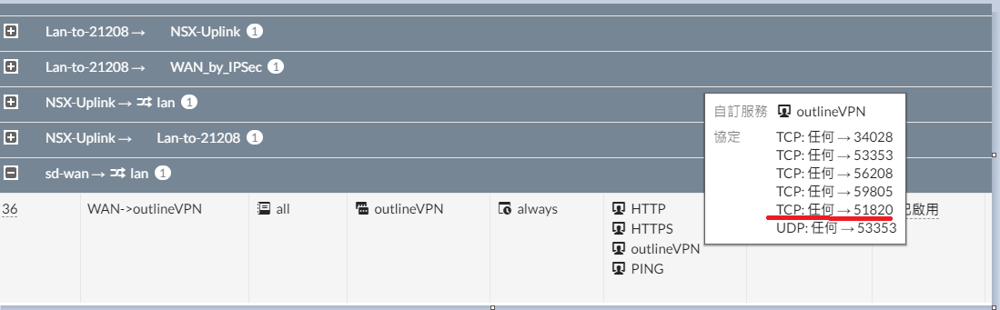

Wireguard 實作 (WAN IP version)
Contents

介紹
WireGuard 是一款開放原始碼的 VPN 程式，主打簡單快速 (任何設備) 並且效能比 IPSec、OpenVPN 更快，安全性方面更是強調 “state of the art” (最先進的) 安全協議包括但不限於: Noise protocol framework, Curve25519, ChaCha20, Poly1305, BLAKE2, SipHash24, HKDF Protocol & Cryptography - WireGuard。 Source Code 也僅僅約 4000 行，相比其他 VPN 軟體更容易維護以及稽查安全漏洞
WireGuard 希望把連線 VPN 這件事情弄得跟 SSH 一樣容易設定、部屬簡單，透過 WireGuard 建立 VPN 只需要簡單的幾把公鑰。 WireGuard 甚至可以在不同 IP 間漫遊，用戶不必管理連線、deamon 或其他複雜的設定。
基於以上種種優點， WireGuard 正式版 v1.0.0 正式加入 linux kernel 5.6.x ITHOME 詳細報導
安裝
WireGuard 軟體上並沒有 server client 之分，差別只在於設定檔
以 CentOS 7 來說官方提供三種不同的安裝方式
Method 1. 將已簽章模組丟入 kernel (CentOS 另外一個核心版本已經自帶，我們直接替換)
|
|
Method 2. 掛載其他模組 (為了使用原廠核心) 不須 reboot 推薦使用
|
|
Method 3. 若使用有修改過的 kernel 可以使用 DKMS 來安裝
通常 for 公有雲有自行修改 Linux kernel 的情況
|
|
Server 設定
設定環境:
- OS: CentOS 7
- 網路: behind NAT
- hostname: jumpserver
開啟 IPv4 封包轉發 How to enable IP forwarding on Linux (IPv4 / IPv6)?
|
|
永久開啟 (寫入設定檔 /etc/sysctl.conf )
|
|
立即生效請執行 sysctl -p /etc/sysctl.conf
切換到 /etc/wireguard 下設定與產生金鑰
註: v1.0.0 之後安裝過程即會創建該目錄，不必手動新增
|
|
產生公私金鑰對
|
|
建立設定檔，檔名 (不包含.conf) 即會是啟動之後網路卡名稱
|
|
包含以下內容
|
|
PSK 可以透過 wg genpsk 指令產生
如果想讓 firewalld 在啟動 WireGuard 後同時放行 port number 可以在 [interface] 下新增兩個參數。通常 PostUp 與 PostDown 會設定一樣，畢竟啟動開了什麼關閉就要關
|
|
金鑰、設定檔權限限制，有兩種方式
- 在施作之前設定
umask 077預設值是 022 - 施作後執行
chmod 600 -R ./
最後 Start/Enable WireGuard，其中 “@” 後面接的是設定檔名稱
|
|
Client 設定
設定環境:
- OS: CentOS 7
- 網路: behind NAT
- hostname: board
切換到 /etc/wireguard 下設定與產生金鑰
|
|
產生公私金鑰對
|
|
建立設定檔，檔名 (不包含.conf) 即會是啟動之後網路卡名稱
|
|
包含以下內容
|
|
金鑰、設定檔權限限制，有兩種方式
- 在施作之前設定
umask 077預設值是 022 - 施作後執行
chmod 600 -R ./
最後 Start WireGuard
|
|
測試
ping 10.0.0.1有通大致上就沒有問題- 透過 VPN 使用 ssh 登入 server 主機
ssh root@10.0.0.1
透過 graylog 也可以看到是從 10.0.0.2 登入
WAN IP 設定
上面先前的介紹只有單純 private IP 的環境。以下是以公司網路環境將 WireGuard 上外網的教學。
Server 環境:
- OS: CentOS Linux release 7.9.2009 (Core)
- 網路: Behind NAT，不過上層 Forti 有幫我們做 port-forwarding
設定 Forti port-forwarding 的部分
WAN IP: 106.104.x.z:51820 轉 192.168.207.40:51820
這邊要注意的是 WireGuard 使用的是 UDP，需要特別告知網路組留意
像這次就發生雖然 Forti 上 IPv4 虛擬 IP 裡面 TCP 與 UDP 都有開啟 port-forwarding 但是 IPv4 政策路由 (routing policy) 卻設定成 TCP
▲ Forti IPv4 虛擬 IP 正確設定

▲ Forti IPv4 政策路由 (routing policy) 錯誤設定
導致以 wg 指令一直沒有出現 latest handshake 與 transfer 的欄位，這是用來判斷裝置是否有連上 WireGuard Server 的方法
▲ 以 latest handshake 判斷裝置是否連接成功
▲ 連線成功
確認裝置連線成功後使用瀏覽器開啟網頁測試，卻發生網頁無法連線的情況
BTW，我的 iPad 居然在這個情況還能收到 APP 推播通知，假 VPN 阿 Apple Orz
研究人員指控：蘋果在macOS Big Sur中的VPN與防火牆擴充框架排除了逾50款自家程式
沒有設定 NAT 導致封包被丟棄
使用
|
|
列出 host 上所有 UDP 封包
src: Client 端
10.10.207.2
dst: one.one.one.one (CloudFlare Public DNS resolver)
發現問題了嗎? 來自 10.10.207.2 的封包沒有做 NAT，Eric_WireGuard_Demo 這台主機看到 dst 是 1.1.1.1 便把這個 src 10.10.207.2 的封包送到 default gateway 也就是上層 Forti 那邊。
Forti 看到 dst 並不是自己的網域，也把這個封包送到 default gateway 就這樣跑到 ISP Router 那邊。
但是封包很有可能不會成功送到 1.1.1.1 那邊，原因是這種封包是洪流攻擊手法之一，路徑上的 router 會針對 src 去做判斷/過濾。
就算封包成功送到 1.1.1.1 手上， DNS Answer 封包也不可能會回到我們手上。
在這邊再次感謝社群幫忙
▲ 封包 src 是 10.10.207.2
所以我們在 wg0.conf 中增加兩行指令，請 iptables 幫我們把所有要走 default gateway 的封包全部做 MASQUERADE 也就是 NAT
這邊要提醒，不要把整個 iptables-service 裝回來 / running / enable，不然整個封包繞送又會有問題了。
另外網路上也有用 /etc/rc.local 在開機啟動的時候做 iptables-restore <iptables-save 產生的檔案路徑>，經過嘗試後並沒有成功
WireGuard 有提供 PostUP / PostDown 就用它的吧!
|
|
經過 iptables 幫我們做 NAT 後再度觀察所有 UDP 的封包，可以看到 src 10.10.207.2 全部消失了!
通通變成 Eric_WireGuard_Demo
▲ 經過 NAT 後的 UDP 封包觀察
我們也可以使用
|
|
查看 iptables 列表
WAN IP 設定檔 (Server side)
|
|
自動產生 peer 設定檔並顯示 QRCode
script 改自 robinlandstrom/new-wireguard-peer.sh
|
|
腳本功能:
1.自動產生 peer 設定檔 (Public key、IP)
2.寫入/etc/wireguard/wg0.conf(設定檔永久保存，服務啟動會從這邊讀取)
3.產生config.conf設定檔 (for Windows)
使用方式
|
|
特別注意，腳本需要設定檔內至少要有一組 Peer 才能夠抓取正確 AllowedIPs
公鑰長度、格式必須符合，中間字元可以任意輸入
範例:
|
|
依照提示輸入名稱亦可是使用者，這個只是幫助標示這個 peer 是誰在使用
移動設備連接示範
雖然 WireGuard 在未來會成為 Linux VPN 協議主流，但目前無不論 Apple iOS 或者 Google Android 都需要另外安裝 Client App 才能順利連接。
Google Android WireGuard on Play Store
Google Android WireGuard on F-Droid
Apple iOS WireGuard on App Store
方法一. 直接掃描 QR Code
這是最簡單的方法，不過必須要有第二個螢幕才能順利掃描。
▲ 點選右下角加號，選擇 SCAN FROM QR CODE
掃描成功後會跳出式窗要求為這個通道命名，使用者自行輸入。
▲ 輸入 Tunnel name
方法二. 從 QR Code 圖片匯入
這個方法適合沒有第二個螢幕的使用者。利用 LINE 或其他 QR Code 掃描工具能夠取得設定檔內容。
取得內容後可以選擇
(1) 按照內容手動新增
(2) 存成 .conf 檔匯入
這邊以最常出現在手機的 LINE 示範
▲ 利用 LINE 掃描 QR Code
▲ 選擇從圖片檔匯入
▲ 成功將 QR Code 轉成文字
連線成功後使用 ip.sb 查看當前 WAN IP 為何，成功拿到 WireGuard VPN Server 的 Public IP
▲ 成功拿到 WireGuard VPN Server 的 Public IP
可以從畫面下方看到內部 IP 是我們設定的 10.10.207.3，外部 IP 同樣顯示 WireGuard VPN Server 的 Public IP
▲ 使用 Speedtest.net 測速
▲ 成功訪問到公司內部服務
Windows 10 設備連結示範
Windows 10 Enterprice
version 2004
OS build 19041.685
系統操作人員可以使用 sz 將 config.conf 檔案傳送到 localhost (註:如果經過跳板不試用)
或者直接 cat config.conf 複製貼上
▲ 匯入設定檔
▲ 按下連線後即可使用
參考資料
- 【註: psk 認知有錯】WireGuard VPN 設定與使用教學 – Nothing but..
- 【psk 正確說明】WireGuard setup [Turris wiki]
- CentOS 8 set up WireGuard VPN server - nixCraft
- WireGuard VPN 1.0.0隨同Linux 5.6正式出爐 | iThome
- 【官方安裝文件】Installation - WireGuard
- 【官方快速指南】Quick Start - WireGuard
- 【自動產生 peer】Script to automatically add configration for a new peer to a wireguard server. It will then print a QR code to the console that can be used to add the config to the Android or OS X wireguard client.
Author 老柯
LastMod 2022-12-27 (3e781cb)